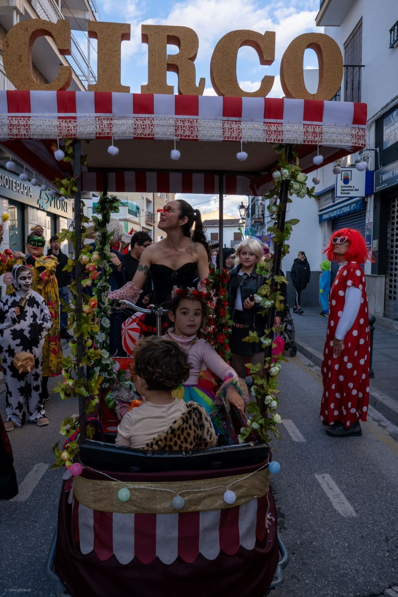

Animación callejera circense que convierte cualquier espacio en un festival itinerante. Música en vivo, vestuario espectacular, interacción directa con el público.
Más de diez personajes y formatos distintos —desde bufones medievales hasta vikingos acrobáticos— adaptados a la temática de tu evento. Disponible en cuatro estéticas.
Contratar
Tres espectáculos de producción propia para cualquier espacio y ocasión. De 15 a 45 minutos de circo contemporáneo: telas aéreas, aro, portes, clown y teatro físico.
Adaptables a festivales, eventos privados, colegios y espacios de interior o exterior.
ContratarUna gran dragona custodia sus huevos sobre un cuadriciclo espectacular. Cuando los dragoncitos eclosionan, el caos más tierno se apodera de todo. Portes, látigo y teatro físico al servicio de una historia de maternidad, libertad y magia desbordada.
Intérpretes: Sergio Rey · Irene Gutiérrez
Diseño de títere: Iker Pérez
Vestuario: Mª José España Díaz


Una hora de creación artesanal en una carpa de 3×3 m. Los niños aprenden, crean y se llevan a casa un recuerdo único. Temática medieval y fantástica adaptable al evento.
Contratar

Irene Gutiérrez y Sergio Rey. Artistas circenses y de teatro de calle formados en Granada. Fundada en 2024, la compañía combina el humor, la improvisación y la precisión física con el riesgo acrobático.
Llevamos el espectáculo donde nos llamen: plazas, festivales, mercados medievales, colegios, bodas y eventos privados en toda España.